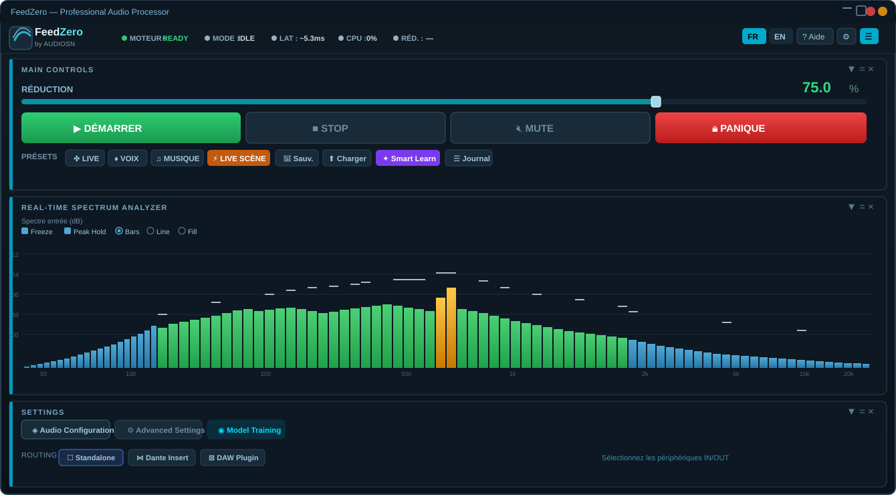
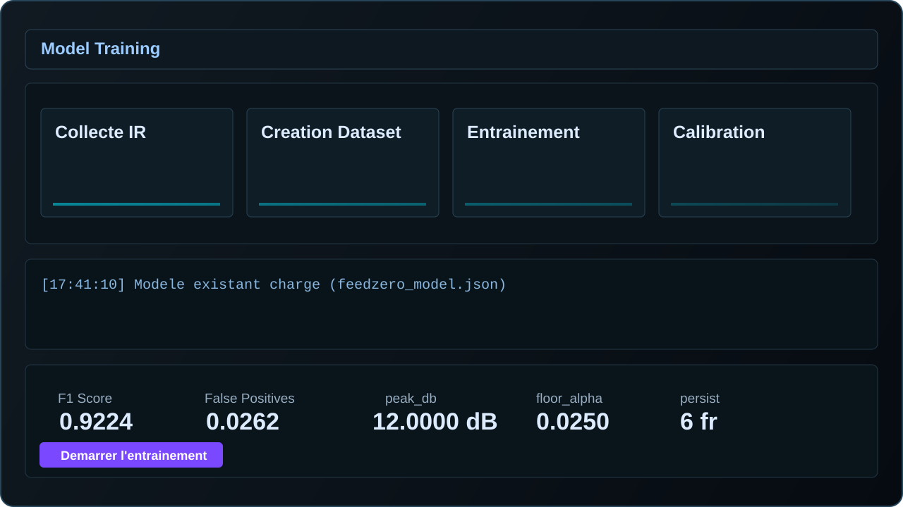

The anti-feedback tool that does not sound
like an anti-feedback tool.
FeedZero detects and removes acoustic feedback in real time through a high-precision adaptive DSP engine, preserving clarity, musicality, and ultra-low latency in live conditions.

Adaptive model and guided calibration
A clear interface covering the essential steps: IR capture, dataset creation, model training, and final calibration.

Technology: The FeedZero Engine
Signal Intelligence for Live Sound
Rather than relying on a resource-hungry, unpredictable black-box AI, FeedZero uses a high-precision Adaptive DSP Engine. This approach delivers ultra-low latency (below 2 ms) and full sonic transparency.
Real-Time Spectral Analysis (FFT)
FeedZero breaks the incoming signal into thousands of frequency bands to identify abnormal peaks instantly.
Intelligent Persistence Algorithm
The engine separates music and voice from true feedback by analyzing the stability and energy growth of each frequency over time.
Adaptive Notch Filtering
Unlike a fixed equalizer, FeedZero deploys dynamic notch filters with surgical precision, removing only the frequency causing the whistle without altering the source tone.
Farina Calibration (Auto-Setup)
Using sine sweeps, FeedZero maps the acoustics of your wedge and microphone to anticipate resonance zones before the first feedback event appears.
The Problem
You know the moment. The wedge starts to ring. A voice goes into feedback. Panic in the singer's eyes. FeedZero handles it before you have to step in.
Acoustic feedback occurs in milliseconds. Real-time reactive suppression is the only viable solution in live conditions.
Three Modes, One Goal
Stable, transparent suppression. Notches adapt progressively. Sound quality is the priority. Ideal for long sets.
Instant feedback kill. May color the sound. Use it when things go wrong. Efficiency over neutrality.
Immediate mute + full reset of all notches and counters. Last resort. Starts from scratch.
Auto-Setup
Automatic calibration via Farina sweep
FeedZero runs a Farina sweep through the wedge/monitor output and captures the response via the stage mic. It calculates the IR (impulse response) of the system and suggests notches and starting parameters adapted to your rig — in seconds. 🎚
Not magic — just rigorous measurement. The suggested parameters are a starting point. Refine them based on real-world results.
Flexible Routing
Standalone Windows
IN → FeedZero → OUT via ASIO/WDM. Plug-and-play with your existing audio interface.
DAW Plugin
Insert on track or bus. VST3/AAX. Compatible with Reaper, Nuendo, Pro Tools and more.
Move to cleaner anti-feedback control
Explore the product in detail or contact our team for guidance.